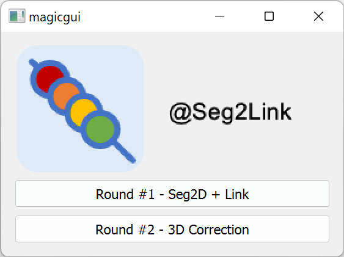

Install Seg2Link
- Install Anaconda or Miniconda
- Create a new conda environment with a custom name, such as seg2link-env, and activate it by running following commands in Anaconda PowerShell Prompt (Windows) or in terminal (macOS/Linux):
$ conda create -n seg2link-env python=3.8 pip
$ conda activate seg2link-env
- Install Seg2Link (hosted on PyPI):
(seg2link-env) $ pip install seg2link
Use Seg2Link
Data preparation
Before performing segmentation, you must have at least the following data:
- A 3D cell image saved in a folder as a set of 2D Tiff images.
- A cellular/non-cellular prediction based on 1, saved in a different folder as 2D Tiff images.
Launch Seg2Link
- Activate the created environment:
$ conda activate seg2link-env
- Launch Seg2Link
(seg2link-env) $ seg2link
 * Here we created and activated a custom environment called seg2link rather than seg2link-env.
* Here we created and activated a custom environment called seg2link rather than seg2link-env.

Choose a module
- Choose a proper module to perform:
- the semi-automatic segmentation (in Module Seg2D+Link)
- or the comprehensive 3D inspection and corrections (in Module 3D correction)